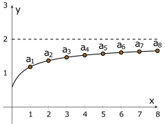

MATH 1336: Calculus III
Section 5.4, Part 2: Series Tests Practice
Be sure to fully justify your reasoning as a part of your solutions.
The answers are upside-down on the bottom of this page.
For Problems 1-5, determine whether the series is convergent, divergent, or if we cannot determine the convergence behavior using the tests we know at this point.

Answers:
Problem 1: Converge, Problem 2: Diverge, Problem 3: Cannot Determine, Problem 4: Diverge,
Problem 5: Converge,